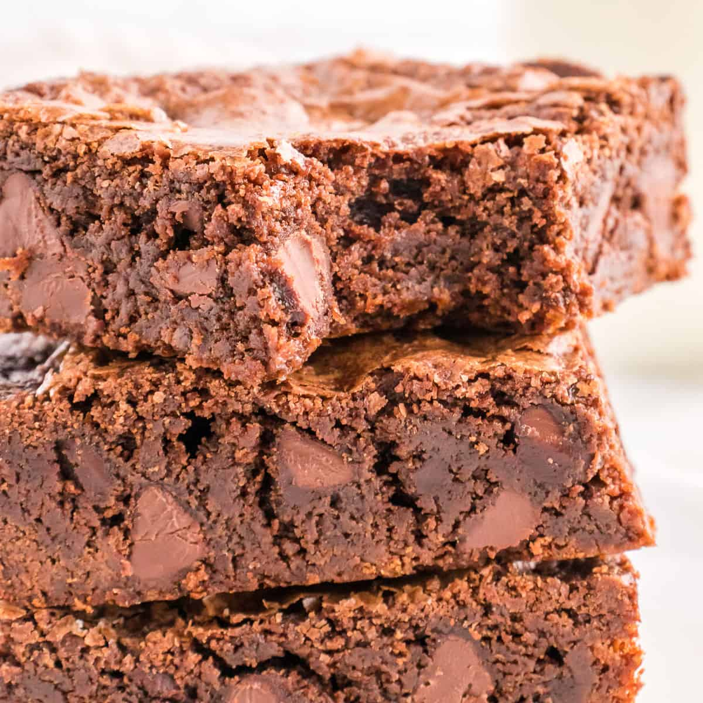

Brownies

Chocolate Chip Brownies
This chocolate chip brownie recipe has been a favorite in the Schorsch Household since the 1970s. It is
based on a Betty Crocker recipe that was a favorite of my Moms and has been updated with some
by my wife. The current iteration is from 2020. If you are looking for fudgy, chocolatey, delicious
brownies this recipe has you covered.
Ingredients and equipment
- 9 by 13 baking pan
- Mixing bowl
- 1 and 1/3 cup butter
- 8 ounces unsweetened baking chocolate (half a bar)
- 2 and 1/2 cups sugar
- 2 teaspoons vanilla
- 2 teaspoons baking powder
- 4 eggs
- 2 cups all-purpose flour
- 2 cups chocolate chips (or measure with your heart)
Steps
- Heat oven to 350 degrees fahrenheit. Grease the bottom and sides of 9 by 13 baking pan.
In a big pyrex bowl melt the butter and the baking chocolate. Once done
put aside to cool.
- Break the eggs into a seperate bowl and whisk them with a fork.
- Add sugar, vanilla, and baking powder to the melted chocolate and butter and mix until
smooth.
- Add flour and eggs to the pyrex and mix until smooth.
- Put in the chocolate chips and mix. Once the chips are incorporated put mixture incorporated
put the mixture into the greased 9 by 13 inch pan. Bake the brownies for 25 minutes for gooey
brownies or 30 minutes for cake-like brownies.
- After allowing the brownies to cool use either frosting or powdered sugar to cover them.